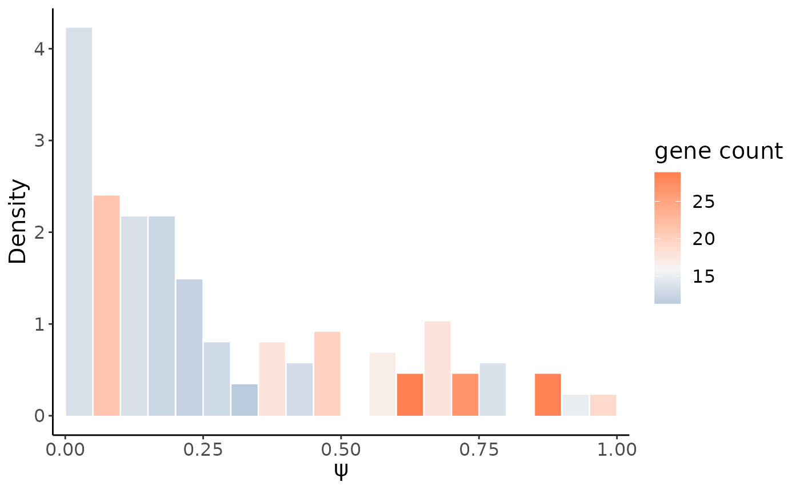
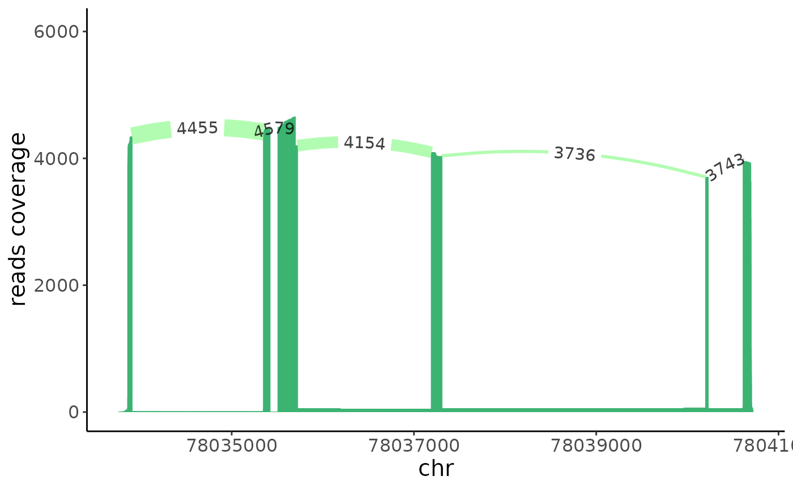

Tutorial for Longcell
Longcell.RmdOverview
This tutorial demonstrates how to use Longcell to analyze single cell isoform count data. Due to the frequent truncations in Nanopore long reads sequencing and to allow for identification of new ioforms, Longcell stores the isoform information as sequence of splicing sites. So instead of building a cell-by-isoform matrix, Longcell reveal alternative splicing events on the splicing sites level. But the cell-by-isoform matrix is also provided for regular single cell RNA seq analysis,like cell type clustering.
The general steps for the analysis are:
regular scRNA-seq gene/isoform expression analysis.
identify highly variable splicing sites.
differetial alternative splicing analysis between cell groups
First, we load Longcell and the other packages necessary for this vignette.
options(future.globals.maxSize= 1024*1024^2)## Loading required package: SeuratObject## Loading required package: sp##
## Attaching package: 'SeuratObject'## The following object is masked from 'package:base':
##
## intersect##
## Attaching package: 'dplyr'## The following objects are masked from 'package:stats':
##
## filter, lag## The following objects are masked from 'package:base':
##
## intersect, setdiff, setequal, unionannotation
The gene strand information is necessary to build meta splicing sites
in the downstream analysis, here we can use the
gene_bed.rds output from the LongcellPre package, but you
can also use your annotation file to indicate the gene strand
information. It should be a table with at least two columns, one for the
gene name, and the other one for the gene strand.
gene_bed = readRDS("../inst/extdata//annotation//gene_bed.rds")data overview
Here we are using the sample of colorecatal metastasis to liver published in our paper as an example. The single cell isoform quantification for this sample is generated by LongcellPre.
We can generate a Seurat object based on the cell by isoform matrix, just in the same way as the cell by gene matrix.
iso_mat = Read10X("../inst/extdata/data/isoform/",gene.column = 1)
crc = CreateSeuratObject(counts = iso_mat,project = "isoform",min.cells = 3,min.features = 200)## Warning: Feature names cannot have underscores ('_'), replacing with dashes
## ('-')
crc## An object of class Seurat
## 17767 features across 236 samples within 1 assay
## Active assay: RNA (17767 features, 0 variable features)
## 1 layer present: countsWe can first do general single cell analysis via regular Seurat process to get the cell cluster information
suppressWarnings({
crc <- crc %>%
SCTransform(method = "glmGamPoi", verbose = FALSE) %>%
RunPCA(npcs = 30, verbose = FALSE) %>%
RunUMAP(reduction = "pca", dims = 1:20,n.neighbors = 30,verbose = FALSE)
})## Found more than one class "dist" in cache; using the first, from namespace 'spam'## Also defined by 'BiocGenerics'## Found more than one class "dist" in cache; using the first, from namespace 'spam'## Also defined by 'BiocGenerics'Here we directly use the cell type annotation we get from marker genes to annotate cell clusters.
cell_type = read.table("../inst/extdata/data/cell_type.txt",header = TRUE)
rownames(cell_type) = cell_type$cell
crc$type = cell_type[colnames(crc),"type"]Single cell heterogeneity of alterative splicing
After we take a glance on the data, we can start to explore the alternative splicing within the cell population. Longcell detect the alternative splicing event at the splice site level.We first read in the data for the downstream analysis.
iso = readRDS("../inst/extdata/data/sc_iso_count.rds")Each read here is stored as \(s_1,e_1|s_2,e_2|...\), in which \(s_i\) means the start position of the exon \(i\) while \(e_i\) means the end position.
We first build a Splice object based on this data.
crc_splice = creatSplice_from_df(iso)The isoform sequences and expression can be revisted from the Splice
object by getIsoform()
temp = getIsoform(crc_splice,c("MYL6","RPS24"))
head(temp)## cell gene
## 575755 AAACGGGGTTATGTGC RPS24
## 575756 AAACGGGGTTATGTGC RPS24
## 575757 AAACGGGGTTATGTGC RPS24
## 575758 AAACGGGGTTATGTGC RPS24
## 575759 AAACGGGGTTATGTGC RPS24
## 575760 AAACGGGGTTATGTGC RPS24
## isoform
## 575755 78033859,78033904|78035352,78035417|78035511,78035720|78037194,78037304|78040615,78040692
## 575756 78033863,78033904|78035352,78035417|78035511,78035720|78037194,78037304|78040204,78040225|78040615,78035580
## 575757 78033863,78033904|78035352,78035417|78035511,78035720|78037194,78037304|78040204,78040225|78040615,78040694
## 575758 78033863,78033904|78035352,78035417|78035511,78035720|78037194,78037304|78040204,78040225|78040615,78040695
## 575759 78033863,78033904|78035352,78035417|78035511,78035720|78037194,78037304|78040204,78040225|78040615,78040696
## 575760 78033863,78033904|78035352,78035417|78035511,78035720|78037194,78037304|78040204,78040225|78040615,78040697
## count polyA
## 575755 0.1904762 1.0000000
## 575756 0.3333333 0.0000000
## 575757 3.3333333 0.9914286
## 575758 1.3333333 1.0000000
## 575759 1.6666667 0.9898305
## 575760 6.0000000 0.9949483As isoform count is even sparser than the gene count, we can only get confident alternative splicing signals from high expression genes, thus we can filter out lowly expressed genes to save the computing time.
heg = HighExprsGene(crc_splice,thresh = 500)
head(heg)## [1] "ABRACL" "ACTB" "ACTG1" "ACTN4" "AGR2" "AIF1"
length(heg)## [1] 752Here 752 genes would be preserved for downstream \(\phi\) calculation. And before that, we can
first merge splicing sites which are always coexisting or mutually
exclusive as meta splicing sites, as they contain the same information.
Through this step we can further decrease the computation burden. The
parameter eps can be adjusted to indicate how aggressive
the merging process would be.Higher eps leads to more
aggressive merge, but may be more possible to lead to information
loss.
plan(strategy = "multisession",workers = 8)
crc_splice = geneSiteTable(crc_splice,gene_bed,genes = heg,eps = 0.05,verbose = FALSE)The merged splicing sites are saved in a metaSite
object, for example:
getMetaSites(crc_splice,"MYL6")## metaSite object with 225 cells and 4 meta splicing sites, which are merged from 25 original splicing sites.
## The head of the gene count matrix for each meta site is:
## metasite_1 metasite_2 metasite_3 metasite_4
## AAACGGGGTTATGTGC 29 28 29 29
## AACCATGAGCCACGCT 5 4 5 5
## AACCATGCAAGCCTAT 6 5 5 5
## AACTCTTCAAGTAATG 3 2 3 2
## AAGACCTAGCTGAAAT 2 1 2 2
## AAGACCTTCAAACGGG 12 9 12 12
## The head of the spliced in count matrix for each meta site is:
## metasite_1 metasite_2 metasite_3 metasite_4
## AAACGGGGTTATGTGC 29 28 29 2
## AACCATGAGCCACGCT 5 4 5 0
## AACCATGCAAGCCTAT 6 5 5 0
## AACTCTTCAAGTAATG 3 2 2 2
## AAGACCTAGCTGAAAT 2 1 2 1
## AAGACCTTCAAACGGG 12 9 12 7The metaSite object maintains two matrices, one records
the gene count for each meta splice site and the other records the
spliced-in count. The correspondence between the meta sites and original
sites is also recorded in it.
After we generate the meta splicing sites, we can estimate the ratio of inter-cell heterogeneity for each meta site.
plan(strategy = "multisession",workers = 8)
crc_phi = genesSitesPhi(crc_splice,genes = heg,method = "beta",verbose = FALSE)Each row in the result table records the \(\bar{\psi}\) (percent-spliced-in) and \(\phi\) (inter-cell heterogeneity)
estimation and the confidence interval for \(\phi\). The count column means
the number of cells which have valid gene expression to estimate the
\(\psi\) and \(\phi\).
head(crc_phi)## gene meta_sites mean_psi phi phi_lwr phi_upr count
## 1 AGR2 metasite_2 0.7553166 0.05558393 -0.007364070 0.1185319 20
## 2 ANAPC11 metasite_2 0.4206358 0.15273095 0.060189270 0.2452726 28
## 3 ANAPC11 metasite_6 0.4774544 0.14312845 0.050723033 0.2355339 28
## 4 AREG metasite_2 0.8635209 0.10122846 0.002846471 0.1996104 23
## 5 ATF3 metasite_6 0.7075183 0.13312699 0.040007757 0.2262462 21
## 6 BCL2A1 metasite_2 0.1698188 0.09520912 0.021722143 0.1686961 32
## phi_conf
## 1 0.1258960
## 2 0.1850834
## 3 0.1848108
## 4 0.1967640
## 5 0.1862385
## 6 0.1469739We can then show all valid \(\phi\) estimation with small confidence interval in a \(\phi\) vs. \(\bar{\psi}\) scatter plot
phiPlot(crc_phi,annot_col = "gene")We could order the \(\phi\) for each meta splicing site in a decreasing order, and the top list should be highly variable exons.
## gene meta_sites mean_psi phi phi_lwr phi_upr count phi_conf
## 41 MYL6 metasite_4 0.3110294 0.2979716 0.23732462 0.3586186 111 0.12129397
## 66 SAT1 metasite_3 0.6718207 0.2067908 0.16702254 0.2465591 157 0.07953661
## 25 IER3 metasite_2 0.8422321 0.1924780 0.10616716 0.2787887 53 0.17262158
## 63 RPS24 metasite_3 0.6695511 0.1822913 0.15178788 0.2127947 221 0.06100680
## 74 SNHG6 metasite_2 0.8348119 0.1676768 0.08307809 0.2522754 44 0.16919734
## 16 ELOC metasite_4 0.6006515 0.1593375 0.06683127 0.2518437 34 0.18501247Here we use the highest one MYL6 metasite_4 as an example, we could first show its single cell \(\psi\) distribution,the color of the bar indicates the average gene expression:
gene = "MYL6"
site = "metasite_4"
psiHist(crc_splice,gene = gene,site = site)
We could also show the \(\psi\) distribution in the cell embedding umap:
embedding = as.data.frame(crc@reductions$umap@cell.embeddings)
psiCellPlot(crc_splice,gene = gene,site = site,cell_embedding = embedding)## [[1]]We could see very different alternative splicing patterns for this exon in epithlials and other immune cells. Epithlials highly spliced in the metasite_4 in MYL6, while T cells and macrophages tend to splice this meta site out.
If we trace back to the original sites, we could find that the metasite_4 contains two sites:
getMetaSites(crc_splice,"MYL6")@sites## [[1]]
## [1] "56158404_out" "56158415_out" "56158684_in" "56158711_out" "56158902_in"
## [6] "56158920_out" "56159498_in" "56159587_in" "56159622_out" "56159975_in"
## [11] "56160025_in" "56160055_out" "56160148_out" "56160243_in" "56160284_out"
## [16] "56161465_out" "56161547_in" "56162264_in" "56162331_out" "56162855_in"
##
## [[2]]
## [1] "56159730_out"
##
## [[3]]
## [1] "56160320_out" "56161387_in"
##
## [[4]]
## [1] "56160626_in" "56160670_out"We can compare the sashimi plot between the epithlials and the immune cells group to see which exons are differetially spliced between the two cell groups.
epithlials = colnames(crc)[crc$type == "epithelial"]
immune = colnames(crc)[crc$type != "epithelial"]## Warning: Removed 1009 rows containing missing values (`geom_segment()`).
sashimi(crc_splice,gene = "MYL6",cells = immune,color_id = 2,filter_ratio = 10)+xlim(c(56158300,56161500))## Warning: Removed 1719 rows containing missing values (`geom_segment()`).From the sashimi plot we can see that the exon \(6\) has differetial alternative splicing between the epithlials and immune cells.
Generalized Likelihood Ratio Test
Since we have found the splicing heterogeneity between epithelials and immune cells, here we could do a differential alternative splicig analysis between the two cell groups to see if they have other more splicing difference.
Still, we would do generalized likelihood ratio test for highly expressed genes.
plan(strategy = "multisession",workers = 8)
group1 = list(epithlials)
group2 = list(immune)
names(group1) = "epithlials"
names(group2) = "immune"
crc_GLRT_sig = genes_groups_GLRT(crc_splice,genes = names(crc_splice@meta_sites),
group1s = list(epithlials),group2s = list(immune))## [1] "The MLE based on current starting points doesn't converge, will try other starting points!"
## [1] "The MLE based on current starting points doesn't converge, will try other starting points!"
## [1] "The MLE based on current starting points doesn't converge, will try other starting points!"
## [1] "The MLE based on current starting points doesn't converge, will try other starting points!"
## [1] "The MLE based on current starting points doesn't converge, will try other starting points!"
## [1] "The MLE based on current starting points doesn't converge, will try other starting points!"
## [1] "The MLE based on current starting points doesn't converge, will try other starting points!"
## [1] "The MLE based on current starting points doesn't converge, will try other starting points!"
## [1] "The MLE based on current starting points doesn't converge, will try other starting points!"
## [1] "The MLE based on current starting points doesn't converge, will try other starting points!"
## [1] "The MLE based on current starting points doesn't converge, will try other starting points!"
## [1] "The MLE based on current starting points doesn't converge, will try other starting points!"
## [1] "The MLE based on current starting points doesn't converge, will try other starting points!"
## [1] "The MLE based on current starting points doesn't converge, will try other starting points!"
## [1] "The MLE based on current starting points doesn't converge, will try other starting points!"
## [1] "optimization failed!"
## [1] "The MLE based on current starting points doesn't converge, will try other starting points!"
## [1] "The MLE based on current starting points doesn't converge, will try other starting points!"
## [1] "The MLE based on current starting points doesn't converge, will try other starting points!"
plan(strategy = "multisession",workers = 8)
crc_GLRT_sig = suppressWarnings(genes_multigroups_GLRT(spliceOb = crc_splice,
genes = names(crc_splice@meta_sites),
meta = cell_type,group_col = "type"))## [1] "The MLE based on current starting points doesn't converge, will try other starting points!"
## [1] "The MLE based on current starting points doesn't converge, will try other starting points!"
## [1] "The MLE based on current starting points doesn't converge, will try other starting points!"
## [1] "The MLE based on current starting points doesn't converge, will try other starting points!"
## [1] "The MLE based on current starting points doesn't converge, will try other starting points!"
## [1] "The MLE based on current starting points doesn't converge, will try other starting points!"
## [1] "The MLE based on current starting points doesn't converge, will try other starting points!"
## [1] "The MLE based on current starting points doesn't converge, will try other starting points!"
## [1] "The MLE based on current starting points doesn't converge, will try other starting points!"
## [1] "The MLE based on current starting points doesn't converge, will try other starting points!"
## [1] "The MLE based on current starting points doesn't converge, will try other starting points!"
## [1] "The MLE based on current starting points doesn't converge, will try other starting points!"
## [1] "The MLE based on current starting points doesn't converge, will try other starting points!"
## [1] "The MLE based on current starting points doesn't converge, will try other starting points!"
## [1] "The MLE based on current starting points doesn't converge, will try other starting points!"
## [1] "The MLE based on current starting points doesn't converge, will try other starting points!"
## [1] "The MLE based on current starting points doesn't converge, will try other starting points!"
## [1] "The MLE based on current starting points doesn't converge, will try other starting points!"
## [1] "The MLE based on current starting points doesn't converge, will try other starting points!"
## [1] "The MLE based on current starting points doesn't converge, will try other starting points!"
## [1] "The MLE based on current starting points doesn't converge, will try other starting points!"
## [1] "The MLE based on current starting points doesn't converge, will try other starting points!"
## [1] "The MLE based on current starting points doesn't converge, will try other starting points!"
## [1] "optimization failed!"
## [1] "The MLE based on current starting points doesn't converge, will try other starting points!"
## [1] "The MLE based on current starting points doesn't converge, will try other starting points!"
## [1] "The MLE based on current starting points doesn't converge, will try other starting points!"
## [1] "The MLE based on current starting points doesn't converge, will try other starting points!"
## [1] "The MLE based on current starting points doesn't converge, will try other starting points!"
## [1] "The MLE based on current starting points doesn't converge, will try other starting points!"
## [1] "The MLE based on current starting points doesn't converge, will try other starting points!"
## [1] "The MLE based on current starting points doesn't converge, will try other starting points!"
## [1] "optimization failed!"## group gene site p alpha1 beta1 alpha2
## 781 epithelial RPS24 metasite_3 4.594592e-28 15.4360341 2.3924591 4.4251506
## 836 epithelial MYL6 metasite_4 1.034219e-26 2.6446410 2.2051834 1.8689681
## 823 epithelial PCBP2 metasite_3 1.155557e-10 0.8140863 0.5537612 20.2299469
## 690 epithelial SSBP1 metasite_1 3.452990e-10 12.6321858 4.5543177 0.5977454
## 300 macrophages SERF2 metasite_2 4.188171e-09 3.8181003 104.3291222 1.6117449
## 920 epithelial SERF2 metasite_2 1.069562e-08 2.5073500 15.8760372 1.1346810
## beta2 emd q mean_diff var_diff
## 781 3.2491754 0.28918950 6.960806e-25 -0.289189500 0.021973232
## 836 11.1277555 0.40150353 7.834208e-24 -0.401503529 -0.033588820
## 823 32.2189723 0.28745582 5.835564e-08 -0.209451054 -0.097323939
## 690 0.2075395 0.19931300 1.307820e-07 0.007272022 0.095257662
## 300 13.2723842 0.07304176 1.269016e-06 0.072981485 0.005767000
## 920 18.3328958 0.07810646 2.700643e-06 -0.078106482 -0.003395092
GLRT_sig_plot(crc_GLRT_sig,color_col = "group")
The metasite_4 in MYL6 is one of the most significant result in the differential alternative splicing analysis between the immune and epithelial cells, which follows our expectation. As from last section, we do observe obvious inter-cell heterogeneity for this metasite.
Besides MYL6, there also other metasites show siginificant difference. For example, the metasite_3 in RPS24, we can observe its \(\psi\) distribtion in two cell populations as a sanity check.
target_group = "epithelial"
target_gene = "RPS24"
target_site = "metasite_3"
target = crc_GLRT_sig %>% filter(group == target_group,gene == target_gene,site == target_site)
target_cells = rownames(cell_type)[cell_type$type == target_group]
control_cells = rownames(cell_type)[cell_type$type != target_group]
psiHist(crc_splice,gene = target_gene,site = target_site,cells = target_cells,
alpha = target$alpha1,beta = target$beta1)
psiHist(crc_splice,gene = target_gene,site = target_site,cells = control_cells,
alpha = target$alpha2,beta = target$beta2)From above histogram we do see, compared to the immune cells, RPS24 in epthelial preserved more metasite_3.
getMetaSites(crc_splice,target_gene)@sites## [[1]]
## [1] "78033904_out" "78033986_out" "78034232_in" "78034316_out" "78034421_out"
## [6] "78035352_in" "78035417_out" "78035511_in" "78035646_in" "78037219_in"
## [11] "78037290_out" "78037965_in" "78037982_out" "78040629_in" "78040647_in"
##
## [[2]]
## [1] "78035720_out" "78037194_in" "78037304_out" "78040615_in"
##
## [[3]]
## [1] "78040204_in" "78040225_out"
sashimi(crc_splice,gene = target_gene,cells = target_cells)
sashimi(crc_splice,gene = target_gene,cells = control_cells,color_id = 2)